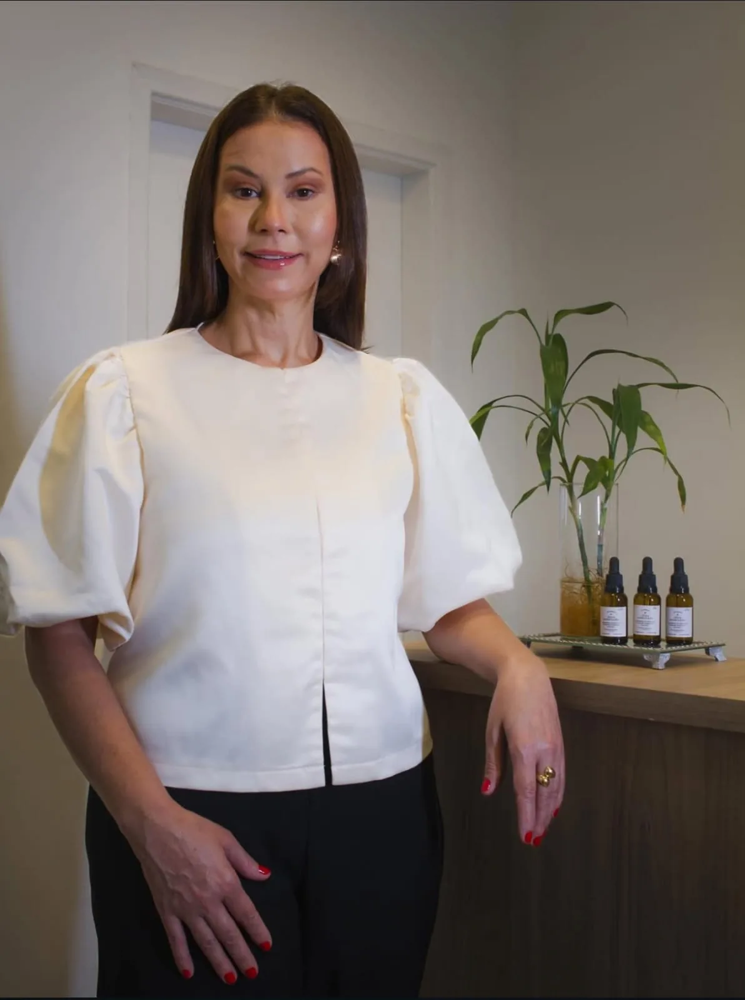
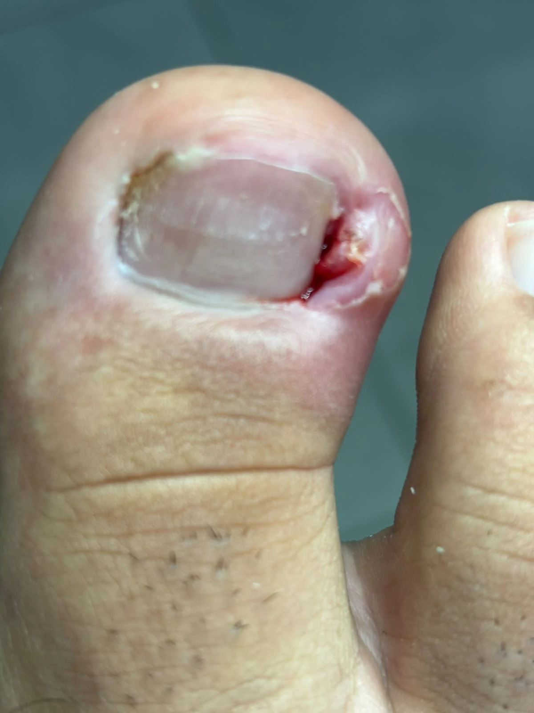
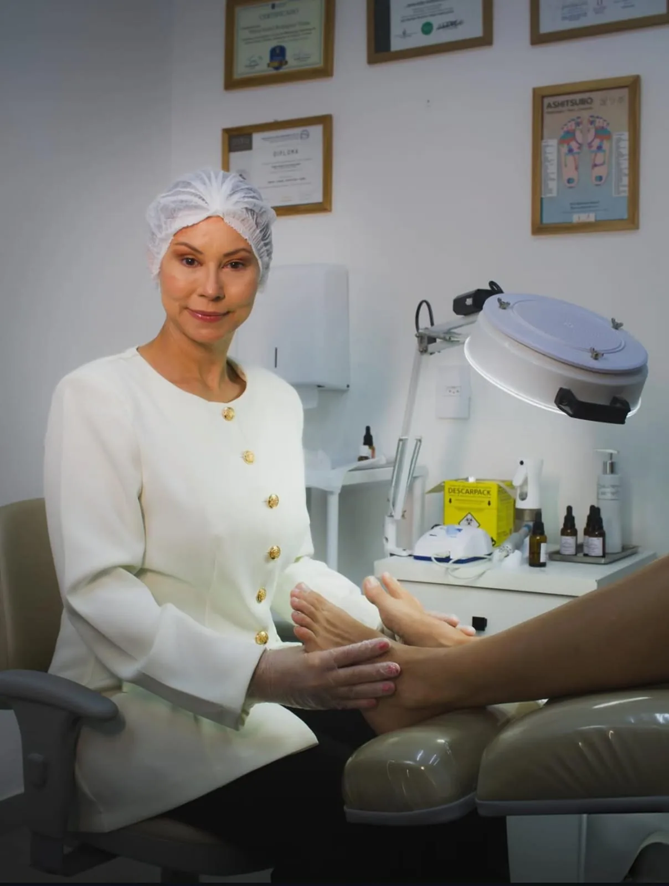

Unha encravada
Cuidados para onicocriptose, inclusive casos inflamados que exigem atenção podológica.
Atendimento podológico especializado, com técnica, experiência e acolhimento para cuidar da saúde dos seus pés em diferentes fases da vida.

A atuação da Izabel une podologia clínica, formação profissional, mentoria e um olhar atento para cada paciente.
Na clínica, o atendimento é realizado de forma individualizada e com linguagem clara, respeitando as particularidades de crianças, adultos, idosos e pessoas que precisam de cuidados específicos.
Escolha o que mais se aproxima do que você está sentindo. O site destaca o cuidado relacionado e facilita o próximo passo.
Atendimento para casos de unha encravada, com avaliação, cuidado do quadro e orientações para o pós-atendimento.
Quero conversar sobre isso
Caso real · avaliação e cuidado podológicoCuidados para onicocriptose, inclusive casos inflamados que exigem atenção podológica.
Acompanhamento podológico de alterações que podem afetar pele e unhas.
Ortoniquia e recursos de correção conforme a necessidade e anatomia das unhas.
Cuidados para rachaduras, ressecamento intenso e desconfortos da pele.
Avaliação e cuidado de calosidades localizadas que geram pressão e desconforto ao caminhar.
Recurso complementar utilizado quando indicado, integrado ao plano de cuidado podológico.
Atendimento para pés diabéticos, podopediatria e podologia geriátrica, respeitando as particularidades de cada fase.
Cuidados periódicos para manter unhas e pele dos pés acompanhadas ao longo do tempo.
Casos publicados pela própria clínica, apresentados com contexto. Cada pessoa responde de uma forma e a conduta é definida após avaliação.
Um exemplo real de evolução acompanhado pela clínica. A indicação e o tempo de tratamento variam conforme cada caso.
Tratamento de ressecamento e fissuras com foco em conforto, integridade da pele e orientação para continuidade do cuidado.
Casos reais de diferentes procedimentos e acompanhamentos realizados na clínica.
O atendimento começa entendendo a necessidade da pessoa. Procedimentos e recursos são escolhidos conforme indicação e acompanhados de orientação pós-atendimento.

As avaliações públicas destacam atenção, segurança durante os procedimentos, cuidado individual e resolução de casos que já haviam passado por outros atendimentos.
Ambiente claro, organizado e acolhedor no centro de Itatiba, pensado para uma experiência tranquila do início ao fim.
O Instagram funciona como uma extensão da clínica: mostra casos, explica tratamentos e ajuda a pessoa a chegar ao atendimento entendendo melhor o que pode estar acontecendo.
Informações práticas para deixar o primeiro contato mais simples.
Sim. O atendimento é realizado com horário agendado. Entre em contato pelo WhatsApp para verificar disponibilidade.
Sim. A clínica realiza cuidados podológicos para pessoas com diabetes, considerando as particularidades de cada caso.
Sim. Entre os atendimentos estão podopediatria e podologia geriátrica.
Rua Campos Salles, 1007, Centro, Itatiba — SP.
O ideal é conversar com a clínica e realizar uma avaliação. O site apresenta possibilidades de cuidado, mas a indicação depende de cada caso.
Fale com a clínica pelo WhatsApp para tirar dúvidas e solicitar um horário.
Agendar pelo WhatsApp ↗